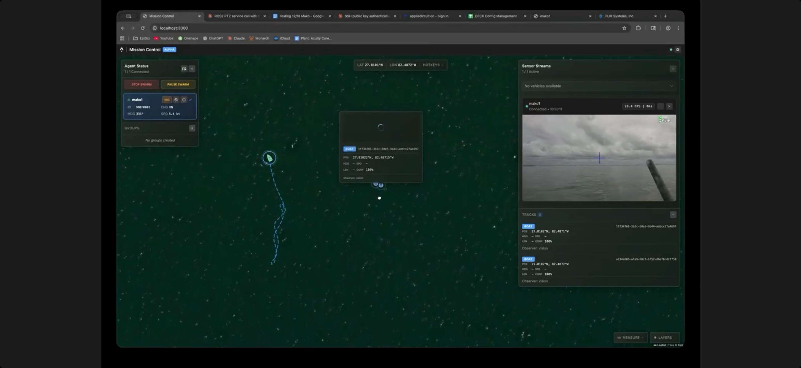
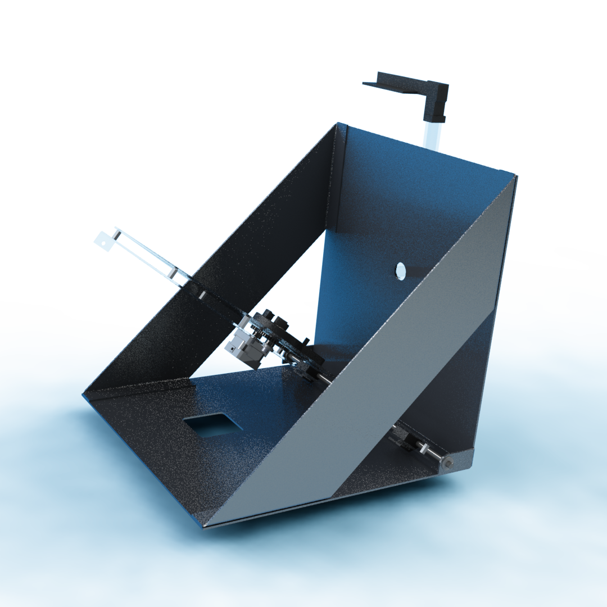
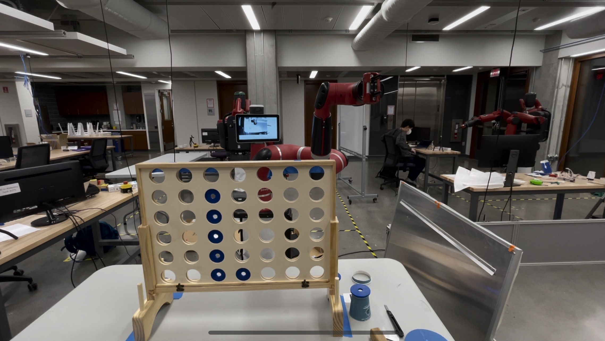
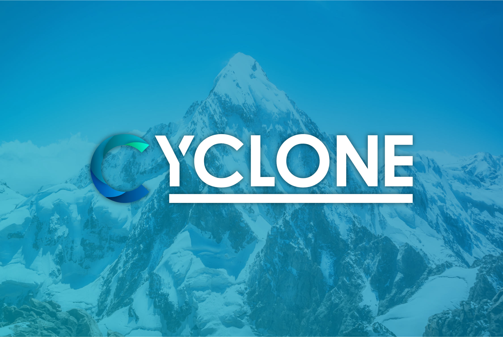
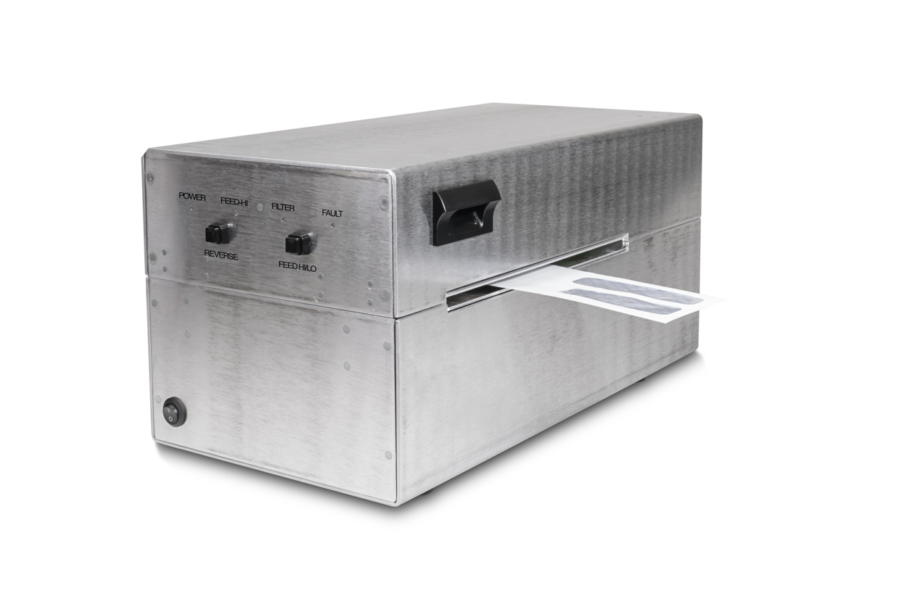
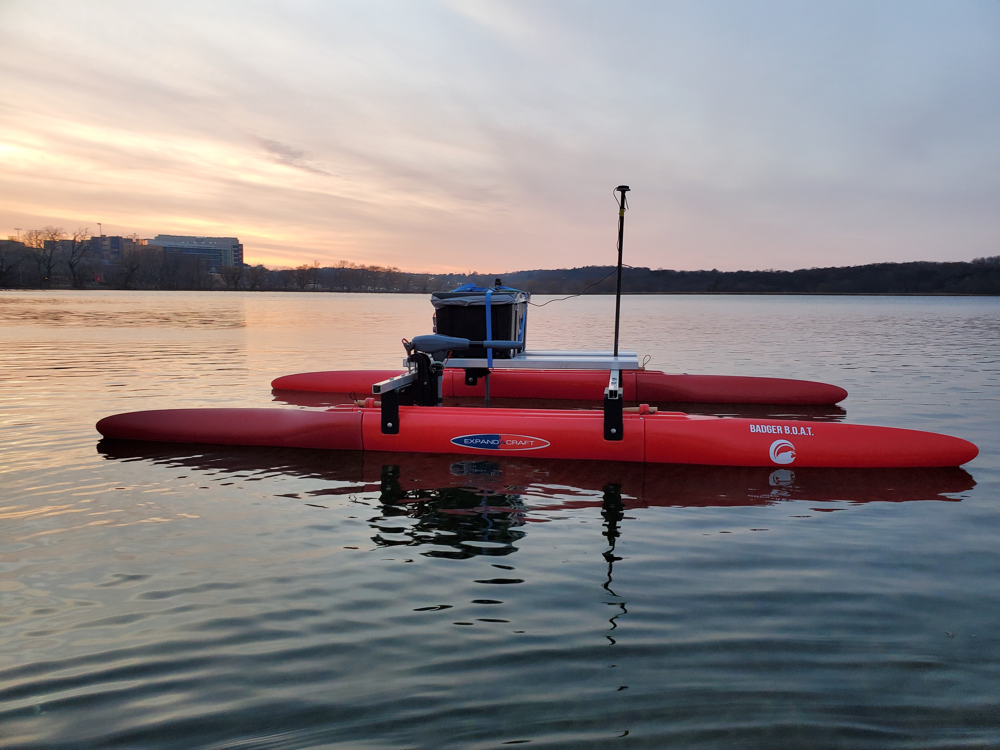
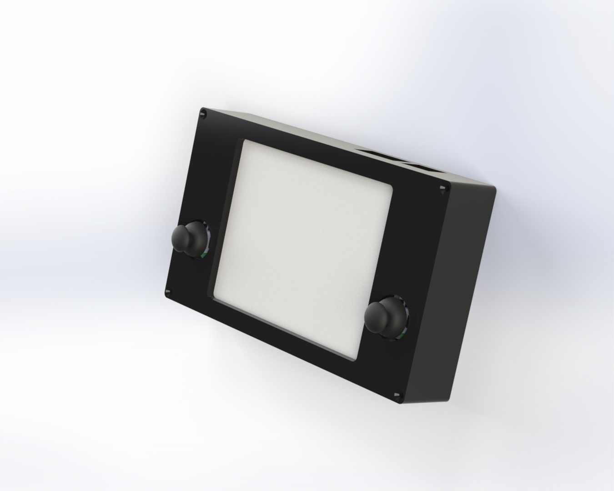
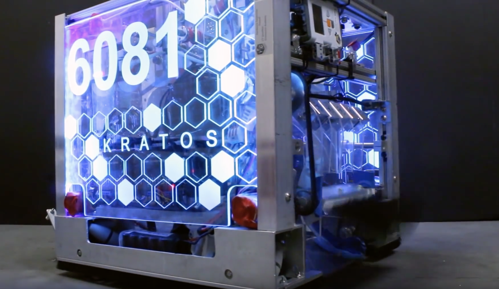

Featured Projects
Explore my work across robotics, automation, and engineering innovation

Defense Robotics Platform
Designing inter-agent communication infrastructure and perception pipelines for defense robotics. Building scalable, containerized solutions for distributed robotic systems.
As a Senior Software Engineer at Applied Intuition, I design and implement critical infrastructure for defense robotics platforms, focusing on inter-agent communication and perception systems.
My key contributions include:
- Communication Infrastructure: Architected a dockerized multi-protocol communication system with translation layers supporting gRPC, ZeroMQ, MQTT, UDP, and ROS2, enabling seamless integration with custom OTA proto-based UDP for optimized field performance.
- Perception Pipelines: Developed real-time sensor data processing pipelines leveraging ONNX Runtime and Triton Inference Server for high-performance inference in operational environments.
- Vehicle & Sensor Interfaces: Built robust communication interfaces using ROS2, enabling reliable data exchange between autonomous systems in complex operational scenarios.
- Distributed Systems: Created scalable, containerized solutions designed for deployment across distributed robotic systems in defense applications.
This role leverages my experience in autonomous systems, combining software architecture, robotics, and real-time systems to deliver mission-critical capabilities for defense applications.
Mission Control Interface: Built the complete mission control web interface shown above solo in just a few days, with UI design assistance from Claude. The interface provides real-time agent tracking, sensor streaming, and comprehensive vehicle telemetry visualization for field operations.

WAM-V
Designed autonomous marine vehicles for government surveillance and scientific research. Led technical development and architecture for next-generation autonomous boat systems.
Starting as the 5th employee at Ocean Power Technologies in 2021, I progressed from Mechatronics Engineer to Senior Mechatronics Engineer, playing a pivotal role through an acquisition that grew the team to over 20 professionals. In my senior role (2023-2024), I led technical development initiatives, drove architecture decisions for software, firmware, and hardware integration, and mentored junior engineers.
My expertise spanned the entire spectrum of autonomous vehicle development for the WAM-V series:
- Software Development: Spearheaded the creation of the control GUI which enabled intuitive control and monitoring of our vehicles.
- Firmware Engineering: Worked meticulously to ensure robust and reliable on-board systems for real-time operations.
- Hardware Design: Led design and implementation of hardware components to enhance the performance and reliability of the WAM-V.
- Manufacturing Transfer & Documentation: Streamlined the production process and created comprehensive documentation for the 8-foot, 16-foot, and 22-foot WAM-V models.
- Technical Leadership: Established best practices for field deployments and drove critical system architecture decisions.
I traveled globally to support deployment teams, including extensive work in Bahrain on MCM (Mine Countermeasure) projects for surveillance and seafloor mapping, as well as remote offshore projects in Alaska.

Bionic Wrench Automation
Designed and built complete manufacturing automation for Loggerhead Tools. Integrated part feeding, assembly, and quality control systems.
Created an automated manufacturing process for the Loggerhead Tools Bionic Wrench as my capstone project at Northwestern University. The system integrated multiple subsystems including part feeding, assembly, and quality control.
The automation system included custom-designed feeders, robotic assembly stations, and computer vision for quality inspection. The project required extensive mechanical design, controls programming, and system integration work.

Sawyer Connect 4
Programmed Rethink Robotics' Sawyer robot to play Connect 4 using computer vision and advanced motion planning algorithms.
This project was made for ME 495 at Northwestern University. The final project in this class was to use one of the rethink robotics robots (sawyer or baxter) to do some task. Our group chose connect four.
The program uses two cameras, one grayscale on sawyers wrist, and one in color on its head. The head camera is used to assess the condition of the game board, and the one on the wrist is used to accurately pick up and place checkers using apriltag position markers. The checker pickup location and each slot on the connect 4 board is labelled with an apriltag.
For this project I worked on the pick-up and place functionality of the robot. I integrated the apriltag functionality with moveit (a ROS package) to control the movement of the robot arm. The user can pass a number into the function I wrote and the robot will pick up a checker and place it in the corresponding slot.

Project Cyclone
Co-founded startup using machine learning for predictive maintenance. Led UI/UX design for platform analyzing sensor data from diesel engines to optimize maintenance schedules.
Co-founded and served as Creative Lead for Project Cyclone, a startup that uses machine learning and sensor data to provide preventative machine maintenance for industrial equipment, with diesel engines as our initial test case.
Led the UI design for the platform, creating intuitive visualizations for complex machine learning insights, designing dashboards for real-time monitoring, and developing user workflows for technicians and engineers. The interface needed to present technical data in an accessible way while maintaining depth for expert users, helping reduce machine downtime considerably.

UV-C Mail Cleaner
Developed automated mail disinfection system using UV-C technology during COVID-19. Complete hardware, software, and firmware design.
Designed hardware, software, and firmware for a device that uses UV-C lights to clean mail during the COVID-19 pandemic. Mail could be fed into the device and processed using stepper motors and rollers as it travels under disinfecting UV-C bulbs.
The system included automated feeding mechanisms, precise UV-C exposure timing, and safety interlocks. Developed the complete control system using microcontrollers and custom circuit design.

BadgerBOAT
Autonomous boat using ROS and MOOS middleware. Implemented sensor fusion and path planning for marine robotics applications.
Developed an autonomous surface vehicle as my senior design project at UW-Madison. The boat used both ROS (Robot Operating System) and MOOS (Mission Oriented Operating Suite) for autonomous navigation and control.
Implemented sensor fusion algorithms combining GPS, IMU, and compass data for accurate positioning. Developed path planning algorithms for waypoint navigation and obstacle avoidance in marine environments.

ROS Controller
Custom controller with e-ink display for ROS debugging. Designed hardware interface and firmware for robotics development.
Built a custom handheld controller with an e-ink display specifically for debugging and controlling ROS (Robot Operating System) applications. The device provides a portable interface for robotics developers to monitor and control their robots in the field.
Designed the complete hardware system including custom PCBs, selected appropriate microcontrollers, and developed firmware for real-time communication with ROS networks. The e-ink display provides excellent outdoor visibility while maintaining low power consumption.

RoboTee
Dynamically adjustable robotic baseball tee with Android app control. Complete mechanical, electrical, and software design.
RoboTee is a robotic baseball tee commissioned to Presco Inc. by RoboSport. Its goal was to create a tee that does not create a sweet spot in a batters performance. Many professional baseball players use tees in practice, but having the ball at the same height every time provides a disadvantage -- they get used to hitting at that height.
RoboTee dynamically adjusts its height after every ball is hit off. The range of heights is adjustable using an Android app that connects over Bluetooth LE.
For this project I both programmed an Android app to interact with the tee, as well as design several main components of the mechanical design. I also worked on the electrical side, finding the correct boards to run the stepper motor and communicate over bluetooth. The whole project was run off of an arduino.

i²robotics
Founded and led high school robotics team. Designed competitive robots and managed all team operations.
Founded and captained my high school FIRST Tech Challenge robotics team, i²robotics. Led the team through four years of competition, designing and building competitive robots for annual challenges.
Managed all aspects of team operations including fundraising, outreach, recruitment, and competition strategy. Responsible for mechanical design, programming, and drive team operations. This experience sparked my passion for robotics and engineering that continues today.